Look n°9
Salon cosy vert sauge et doré
Un salon tout doux en vert sauge, crème et doré : canapé arrondi, étagères hexagonales lumineuses, table au pied doré et poufs bouclés. Voici les articles pour recréer cette ambiance cosy chez toi.
Prix au 27/10/2026
-
Canapé 3 places incurvé en chenille crème
188 × 107 cm, 2 modules arrondis, livré compressé sans montage, avec 6 coussins crème. Sur l'image, il paraît d'un seul bloc et un peu plus long.
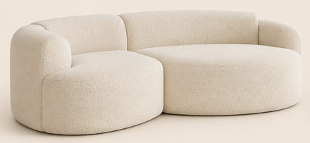
-
Table basse ronde effet marbre, pied doré
Plateau effet marbre blanc Ø 79,5 cm, 46 cm de haut, pied en anneaux dorés entrecroisés.
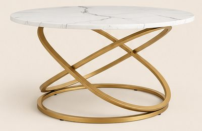
86,90 €Voir sur Amazon -
Grand tapis crème à relief
200 × 290 cm, poils courts, relief ton sur ton. Sur l'image, les lignes du relief sont plus régulières.
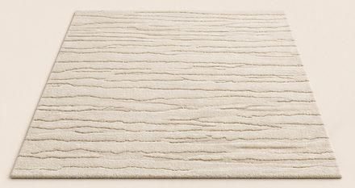
-
Coussins rouille, crème et vert olive
3 lots de 2 housses (sans garnissage) : fausse fourrure côtelée rouille 45 × 45 cm, fausse fourrure côtelée crème 60 × 60 cm, chenille vert olive 45 × 45 cm.
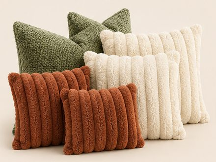
15,99 € + 30,84 € + 17,99 €Voir les coussins rouilleVoir les coussins crèmeVoir les coussins vert olive -
Plaid vert olive en fausse fourrure côtelée
130 × 150 cm, très doux. Sur l'image, les côtes sont un peu torsadées.
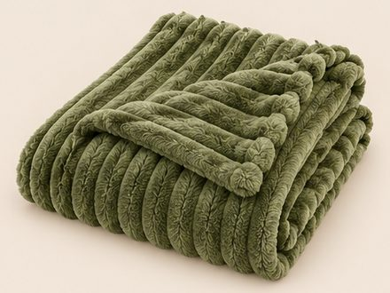
-
Poufs en tissu bouclé vert sauge, lot de 2
40 × 38 × 40 cm chacun, en forme de pont, livrés montés.
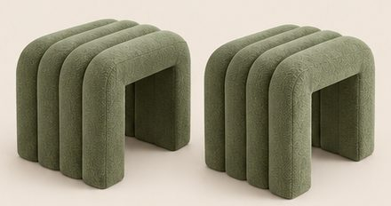
89,99 € les 2Voir sur Amazon -
Lampadaire arc doré, abat-jour en lin
Environ 160 cm de haut, abat-jour en lin beige, ampoule E27.
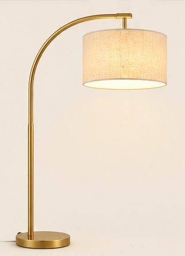
54,99 €Voir sur Amazon -
Plafonnier lustre en cristal doré
50 cm de large, 45 cm de haut, fixé au plafond, 5 ampoules E14.
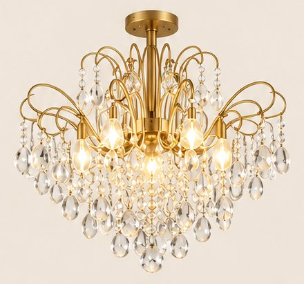
94,99 €Voir sur Amazon -
Ruban LED blanc chaud 5 m
Ligne de lumière continue, variable, avec appli et télécommande. Sur l'image : contour des étagères, au-dessus des rideaux et derrière le canapé ; un ruban de 5 m couvre deux de ces endroits, en prendre 2 pour les trois.
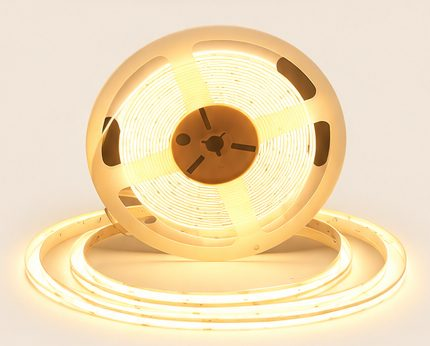
26,99 €Voir sur Amazon -
Olivier artificiel 150 cm en pot blanc
Feuillage fin vert-gris, petit pot rond blanc.
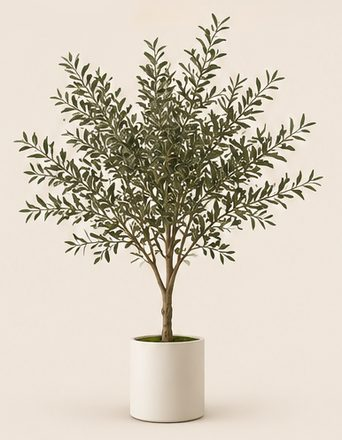
59,99 €Voir sur Amazon -
Rideaux occultants blanc crème, lot de 2
140 × 245 cm chacun, à œillets.
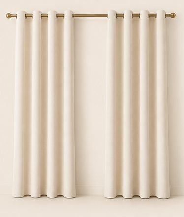
51,99 € les 2Voir sur Amazon -
3 tableaux abstraits vert sauge
30 × 40 cm chacun, cadres en bois clair.
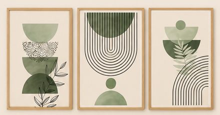
36,99 €Voir sur Amazon -
Étagères murales hexagonales blanches, lot de 2
Environ 40 cm de large, à fixer au mur. La lumière vient du ruban LED (n° 9).
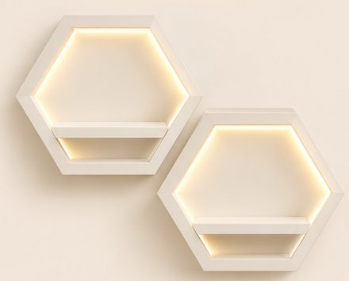
24,16 €Voir sur Amazon -
Mini plantes artificielles, lot de 4
22 cm de haut, pots beige noués de ficelle de jute.
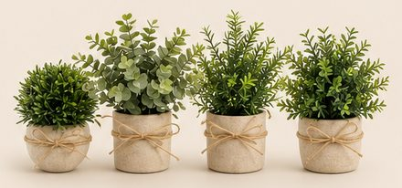
26,04 €Voir sur Amazon -
Faux livres en lin vert sauge et beige, lot de 2
Boîtes en forme de livre à fermeture aimantée : une sur la table, une sur l'étagère.
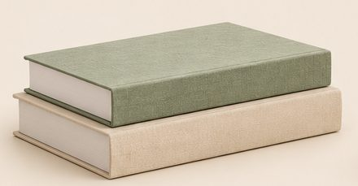
22,79 €Voir sur Amazon -
Vases cœur blancs et roses vert foncé
2 vases en céramique qui s'emboîtent en cœur (environ 21 et 16 cm). Roses artificielles vert foncé, lot de 10.
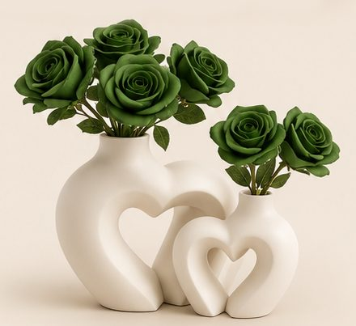
Image d'inspiration générée par IA. Prix indicatifs, revérifiés toutes les deux semaines.